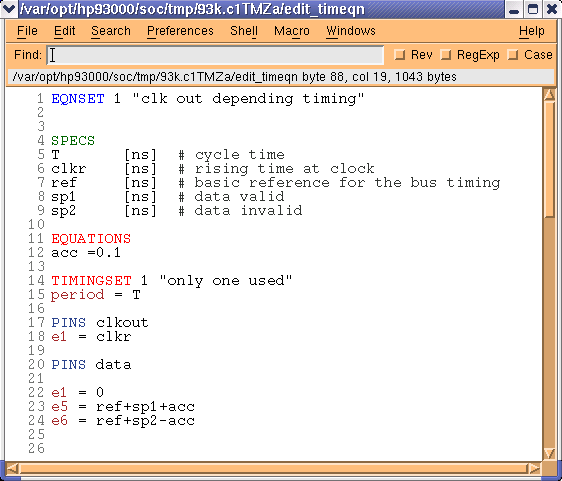

Defining the equation sets
Having setup your wavetables, you must define the equations that will form the backbone of your test.
- Choose Edit Equations in the Select pulldown menu of the Timing Setup in order to define the equations.
- Click Generate at the bottom of the screen.
This enables you to get the fixed timing values from the existing setup. The screen should look similar to that of the figure below.

- If necessary, define your own period resolution.
By default the software automatically determines the best period resolution (for example, for a period of 20.4 ns results in the software selecting 10.2 ns). However, in certain applications - if multiple timing sets do not have the same period - you can force the period to your own value.
- Give the equation set a reference.
Valid reference values are names and/or numbers, for example, EQNSET 1. For details on the syntax, see Equation based timing setup.
- Define a set of specifications, SPECS - see Equation based timing setup.
SPECS T [ns] # cycle time clkr [ns] # rising time of clock ref [ns] # basic reference for the bus timing sp1 [ns] # data valid sp2 [ns] # data invalid
- Define any timing sets, TIMINGSET, you are
using.
TIMINGSET 1 "only one used" period = T
Once again in the example, only one timing set is used. The timing set can be referenced by either a number (1 in the example) or a description (only one used, in the example).
- For each of your pins, define where the edges should occur.
In the example device, edge 1 (e1) will be at ref. The figure below clearly shows that pins clkout and data are defined.
TIMINGSET 1 "only one used" period = T PINS clkout e1 = clkr PINS data e1 = 0 e5 = ref + sp1 + acc e6 = ref + sp2 - acc
- If necessary define any guard bands or accuracy adjustment in your definitions of the
edges.
In the figure above, acc has been introduced. In equation set 1, acc is defined as a constant variable (it always has the same value for all specsets of that equation set) and represents an accuracy guard band of 0.1 ns (see the figure below).
EQUATIONS acc = 0.1
- Once you have defined your equations, select to download these settings to the test system.
Upon download, the syntax of your description is checked, and if you have made any errors you will be notified accordingly in the report window.
Note Remember that if you want to have your equation file available at a later stage, you must either save it from within the wavetable editor, or save the Timing Setup.
Functional changes
- Introduced before SmarTest 6.3.2